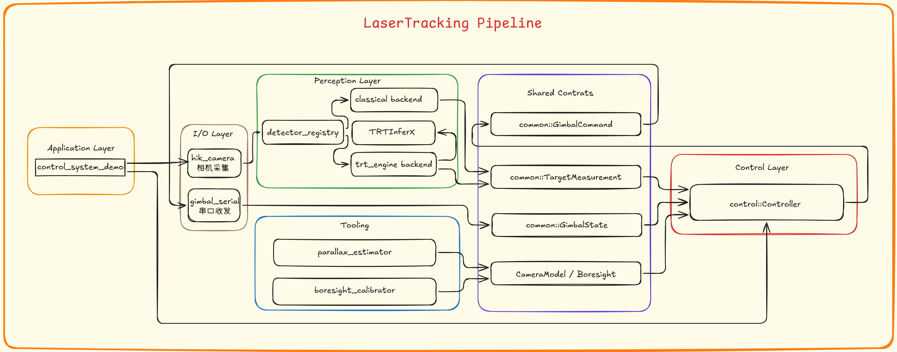
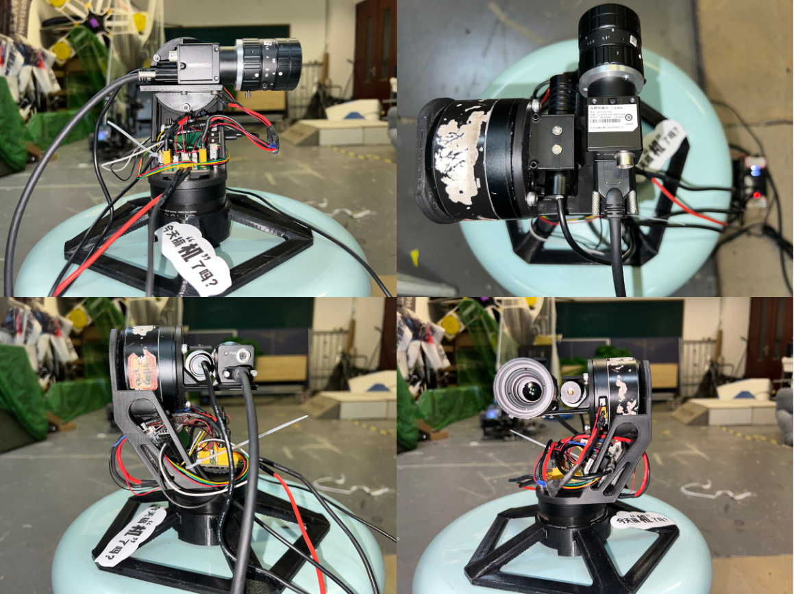
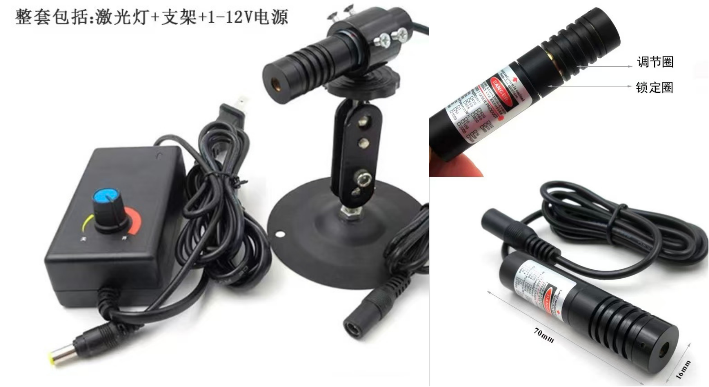
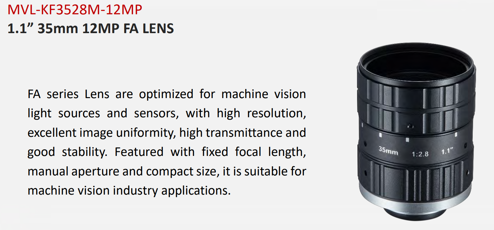
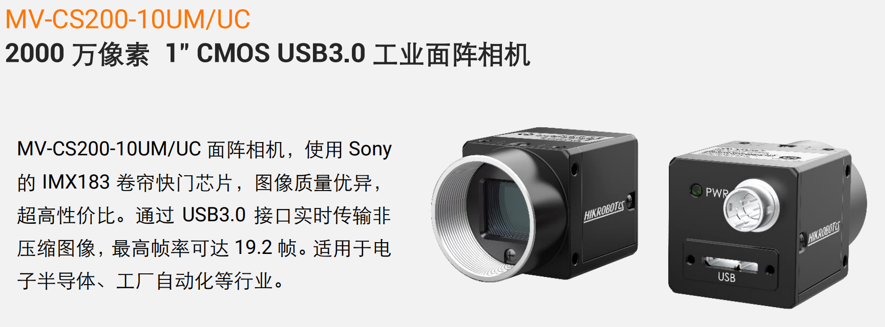
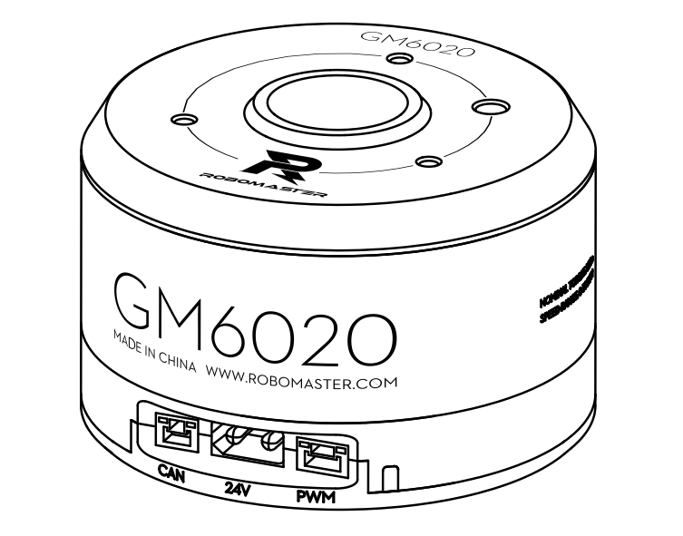
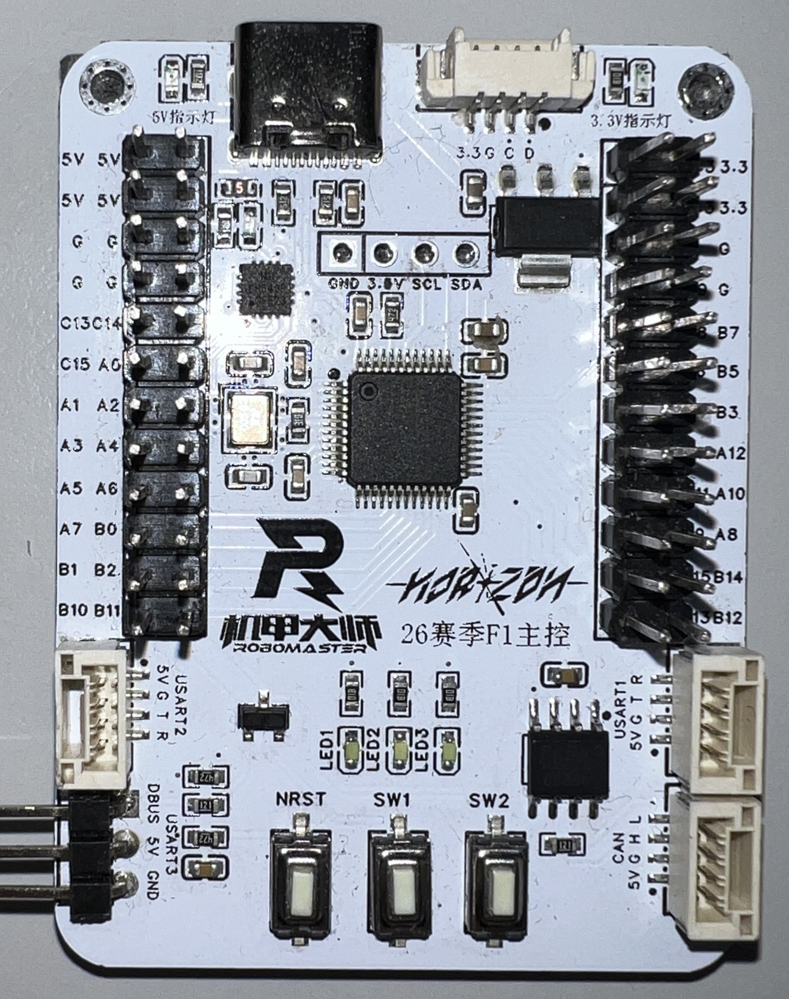

Counter-UAV Laser Tracking
A real-time vision-control pipeline for aerial target detection, boresight alignment, and two-axis gimbal tracking.

Overview
Counter-UAV Laser Tracking is a real-time vision-control system for aerial target tracking and gimbal alignment. It connects industrial camera acquisition, replaceable detection backends, image-space control, serial gimbal communication, and calibration utilities into one integrated experimental pipeline.
The project was built around the practical constraints of competition-style robotics: limited frame budget, hardware feedback latency, camera exposure tradeoffs, perception-control coupling, and the need to replace detection backends without rewriting the rest of the system.

Runtime Pipeline
The runtime starts from Hikvision industrial camera frames, runs either classical color-based detection or TensorRT-based inference, converts the selected target into an image-space measurement, and feeds it into the controller together with the latest gimbal feedback state.
The controller computes pitch and yaw corrections relative to the calibrated laser boresight point, applies deadband, hysteresis, smoothing, rate limiting, optional feedforward, damping, and lost-target search logic, then sends fixed-size command frames to the two-axis gimbal over serial.
System Components
- A shared common layer defines target measurements, gimbal state, gimbal commands, camera intrinsics, boresight parameters, and YAML configuration helpers.
- The Hikvision MVS industrial camera module handles image acquisition and provides frame buffers that can be consumed by CPU-based or GPU-oriented downstream processing paths.
- The detector module exposes a unified interface for classical HSV detection or TensorRT inference through the TRTInferX backend.
- The control module maps image-space target error into pitch and yaw commands, with filtering, safety limits, feedforward, damping, and lost-target behavior.
- The serial module packs and parses fixed-size gimbal frames, handles byte-stream alignment, and supports high-rate command transmission with feedback statistics.
Hardware Setup
The prototype is built around a high-resolution Hikvision MVS industrial camera, a long-focus lens, a visible laser reference module, a two-axis gimbal, and a microcontroller-based low-level control board. A Linux host runs image acquisition, detection, and control logic, while USB 3.0 and serial communication connect the camera and gimbal feedback loop.
The hardware choices were made for real-time tracking experiments: camera resolution and exposure affect measurement stability, gimbal feedback affects closed-loop behavior, and host-side GPU acceleration can be used when the detector path needs higher throughput.






Vision Pipeline
The vision side is organized around a replaceable detector interface. A Hikvision MVS frame provides the timestamped BGR image, and the detector backend converts that frame into a target center, bounding box, confidence score, and timestamped measurement for the controller.
The classical backend uses HSV thresholding, optional blur, morphological filtering, contour extraction, circularity and fill ratio checks, then selects a single target candidate. It also includes a lightweight tracking layer with center smoothing, velocity prediction, ROI reuse, jump rejection, and short missed-frame compensation.
The TensorRT backend follows the same detector contract. It wraps the TRTInferX runtime, supports CPU input or GPU-buffer input when the camera path provides it, and converts detections back into the same image-space target measurement used by the control module.
Control Model
The controller does not aim at the image center directly. It tracks the target center relative to the calibrated laser boresight point in image coordinates.
ev = vt - vL (ut, vt) is the detected target center, and (uL, vL) is the calibrated laser boresight point in the image.
Camera intrinsics convert pixel error into small angular corrections, with sign terms used to match the gimbal coordinate convention.
Δpitch = spitch atan(ev / fy) The implementation converts these angular corrections to degrees for the gimbal command interface.
The output command is then smoothed and rate-limited, so the control signal remains compatible with real gimbal dynamics.
qsmooth = αqcmd + (1 - α)qprev
|qsmooth - qprev| / Δt ≤ ωmax q represents either yaw or pitch. Deadband and hysteresis are applied before command smoothing to avoid small noisy corrections.
A more detailed explanation of the control principle is available in this technical blog post .
Boresight and Parallax Calibration
The system tracks targets relative to a calibrated laser boresight point in the camera image, rather than simply aiming at the image center. The boresight calibrator helps estimate that image-space reference point, while the parallax estimator analyzes how a camera-laser baseline produces distance-dependent pixel offsets.
These tools are important because a fixed pixel offset is only a local approximation. With a long focal length and a nonzero baseline, even a small mechanical offset can become a visible image displacement at different working distances.
Engineering Notes
From the beginning, the system was designed as a loosely coupled modular pipeline rather than a monolithic demo. Camera acquisition, detector backends, controller logic, serial communication, calibration tools, and visualization are connected through shared data interfaces, which makes the system easier to debug, extend, and adapt to different hardware setups.
This separation matters for real-time robotics. It makes frame-rate limits, transfer overhead, serial scheduling, and control stability easier to inspect independently, while still allowing the whole pipeline to run as a connected system.
The TensorRT path reuses my TRTInferX inference runtime, connecting the standalone YOLO deployment engine to a full perception-control application.

Why It Matters
Real-time robotic tracking is not only a detection problem. The final behavior depends on camera latency, detector runtime, target measurement stability, gimbal feedback quality, serial scheduling, calibration accuracy, and controller dynamics.
This project was built to expose and connect those pieces in one inspectable system, making it possible to test how perception, calibration, and control interact under practical timing constraints.